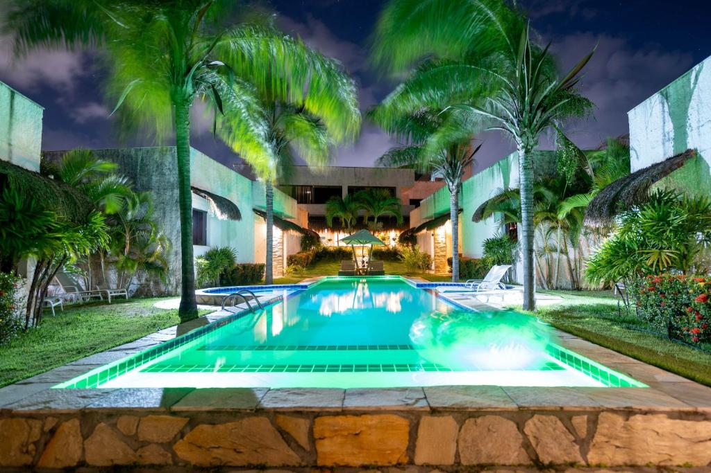

Suíte Standard
Aconchego para casais, a partir de R$ 390 por noite.

Refúgio Ponta do Seixas
Pousada no extremo oriental das Américas, em João Pessoa (PB)

Aqui o dia começa antes do resto do continente. A pousada fica a poucos passos da Ponta do Seixas, o ponto mais oriental das Américas, com 12 acomodações, café da manhã regional e acesso direto à praia.
Aconchego para casais, a partir de R$ 390 por noite.
Varanda de frente para o mar. Promoção de baixa temporada: R$ 690 R$ 490 por noite.
Privacidade total para até 4 pessoas, a partir de R$ 890 por noite.
Nota média:
Acordar com o sol entrando pela varanda foi a melhor parte da viagem. Voltaremos no Réveillon!
Mariana, São Paulo (SP)
Equipe atenciosa e o melhor cuscuz que já comi num café de pousada.
Rafael, Recife (PE)